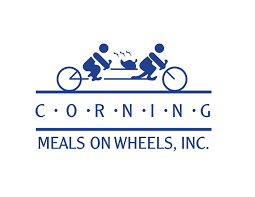

A Little About Me:
I love long-distance running
(especially around Boston)!
I am a Brooklyn Nets and NBA fan.
I also love playing basketball
and just shooting around to improve my game.
Fun Fact: I met Donald Glover on
Fisherman's Beach, Nantucket, MA!
I also love reading, playing games, and
relaxing on the beach.
Work Experience
Medicinal Chemistry Co-op at the LDDN (Laboratory for Drug Discovery in Neuroscience)
Brigham and Women's Hospital and Harvard Medical School | Boston, MA | Present (Summer 2023 to Present)
Researching novel drugs by performing complicated organic synthesis reactions, computationally modeling interactions, and studying the biological effects of synthesized drugs on the nervous system.
Assisting in the development of drugs for three projects: Alzheimer's (targeting tubulin, kinases, and phosphatases to decrease NFTs in the CNS), Migraine (trying to increase specificity for seretonin 5HT-1f receptors), and Essential tremor (trying to find a middle ground on GAMA-PAM agonism).
Emergency Department Volunteer
Boston Children's Hospital | Boston, MA | Summer 2023 to Present
Interacting and providing engagement with pediatric patients in the ED at BCH. Providing them with games, toys, video games, etc.
Sterilizing and restocking supplies.
Organic Chemistry II Teaching Assistant
Northeastern University | Boston, MA | Fall 2023

Helping to lead weekly review sessions to reinforce new subjects taught each week.
Hosting office hours to answer specific student questions.
Discrete Structures Teaching Assistant
Northeastern University | Boston, MA | Present (Spring 2023)
Guiding students in learning the foundational underpinnings of mathematics used for
computer science. Course content includes combinatorics, algorithmic analysis, and number/logical
representation in computing. Hosted weekly office hours and graded assignments/tests.
Proofreading assignments to ensure clarity and correctness.
Fundamentals of Computer Science I and Discrete Structures Teaching Assistant
Northeastern University | Boston, MA | Fall 2022
Assisted over 800 students debug DrRacket programs, hosted office hours, graded assignments,
and responded to various students inquiries on a Piazza forum.
Mathematics Teaching Assistant
GST BOCES | Horseheads, NY | Summer 2022

Taught foundational math topics to a 7th grade summer school classroom. Actively fostered an inclusive learning environment.
Volunteer Experience
Volunteer Leader | Boston Cares
Boston, MA | 2022 - Present
Events:
- Prospect Hill Academy STEAM Saturdays: assisted a youth LEGO robotics classroom (Cambridge, MA).
- X-Cel Education: Highschool equivalency math tutoring for people working to obtain a Highschool
diploma (Roxbury, MA).
Concierge Desk | Guthrie Corning Hospital
Corning, NY | Fall & Spring 2019/2020
Helped visitors at the hospital with various inquires.
Managed patients checking-in and waiting for appointments.
Walked with patients and visitors to other sectors around hospital.
Meals on Wheels
Corning, NY | Summer 2020

Delivered Meals to the homebound during the COVID-19 pandemic.
Socialized with recipients.
Programming Languages & Technologies
Advanced
Java (JUnit Testing, IntelliJ, Eclipse), Racket
Intermediate
HTML & CSS (VSCode), Python (PyCharm, JupyterNotebook, scikit-learn, MatPlotLib)
Basic
JavaScript, LaTeX (Overleaf)
Licenses and Certifications
EMT Basic | National EMS Institute
Shadowing Experience
Neurosurgery
Brigham and Women's Hospital | Boston, MA
Dr. Micheal Mooney | Operations Observed:
- Parasagittal Meningioma Resection. Craniotomy. Operated close to the superior sagittal sinus. Tumor was located near the primary sensorimotor cortex.
- Lumbar Laminectomy and Discectomy (L4/L5). Spinal Decompression.
Orthopedic Surgery
Arnot Hospital | Elmira, NY
Dr. Bryan Jarvis | Operations Observed:
- 2X Total Knee Arthroplasty.
- 2X Total Hip Arthroplasty; Anterior approach.
- ACL reconstruction.
Radiology and Interventional Radiology
Dr. Joseph Bifano, Dr. Sobieraj, and Dr. Masi
- Reviewed MRI and CT scans. Observed: Ectopic pregnancy, Appendicitis, Stroke, etc.
- Interventional Procedures: heart and lung biopsies.
Anesthesiology
Arnot Hospital | Elmira, NY
Dr. Deluca & Dr. Kellner
- Watched intubation, monitoring of patients during procedures, and waking up patients.
- Gained insight into the transfer to the PACU and some common medications used.
General Surgery
Arnot Hospital | Elmira, NY
Dr. Sadhasivam | Operations Observed:
- Umbilical and inguinal hernia repairs. Robotic assisted.
Gastroenterology
Guthrie Corning Hospital | Corning, NY
Dr. Hathwar| Operations Observed:
- 5X Colonoscopies and 5X Endoscopies
- Saw patients presenting with various conditions including Diverticulitis,
Ulcerative Colitis, Chron's Disease, etc.